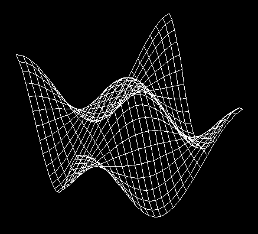

Affichage d'une surface paramétrique
Option GPAO/CFAO : Vous en faite le maximum.
Option IMAGE : Vous faites tout.
|
Le but de ce TP et des suivants est de vous faire
ajouter de nouvelles classes d'objet dans NanoEdit
(comme le segment, la sphère, ...).
Dans tous les cas, un squelette de programme
vous est fourni et vous modifiez ce squelette
afin d'ajouter l'affichage (avec Open GL)
de l'objet en question.
Première étape : recopier le squelette
Il faut recopier le
squelette de o_iso_surf.c
dans le répertoire NE que vous
avez créé au précédent TP.
Pour ce faire, vous pouvez exécuter la commande :
cp /home/exco/NE/stable/TP/C/o_iso_surf.c $HOME/NE
Ensuite, vous allez dans le répertoire NE
et vous tapez /usr/local/bin/make. Une fois lancé,
vous pouvez créer une instance de iso_surface
(dans le menu TP Infographie)
et l'éditer pour voir son contenu.
Vous remarquerez que dans la fenêtre 3D,
un point et un message sont apparus lors de la création.
La surface à afficher
Soit une fonction paramétrique à deux paramètres dans R3.
Cette fonction retourne un point de R3 calculé en fonction
des paramètres u et v.
static Triplet fonction(float u, float v)
{
La formule fournie dans le squelette
donne la surface en bas de cette page.
}
Une iso-paramétrique est une courbe obtenue en reliant
les points retournés par la fonction en fixant
tous les paramètres sauf 1.
Par exemple en faisant varier u entre -1 et 1
et en fixant v à 0.65.
L'image suivante montre plusieurs iso-paramétriques,
dans un sens c'est le u qui est fixé,
dans l'autre c'est le v.

Affichez !
Dans l'ordre, ajoutez les lignes de programme C pour
faire l'affichage de la surface :
- Ponctuel
- Filaire
- Facette Quadrangulaire
- Facette Triangulaire
Petite expérience amusante : activez la surface, mettez le curseur
dans une fenêtre 3d, appuyez continuellement sur la touche
1 (ou 2,3,4,5,6) et déplacez le curseur.
Affichez différement si le noeud est actif ou pas
Vous devez déjà avoir remarqué que votre
surface s'affiche différemment suivant qu'elle est active
ou non. Ceci est géré automatiquement par
NanoÉdit qui change l'état courant de GL pour
modifier l'affichage.
Dans certain cas, on veut afficher de informations supplémentaires
sur l'objet quand il est actif (ou afficher des ``tags'').
Pour cela, on peut utiliser la fonction ACTIF(o) pour tester
si l'objet est actif ou non.
Quand la surface est active, afficher graphiquement la normale
au sommets des facettes en dessinant un petit trait.
Affichage de ``tag''
Un tag permet de modifier les valeurs associées à un objet
de manière intuitive (essayez avec un segment de droite).
Les ``tag'' sont une fonctionnalité de NanoÉdit qui utilise
de nombreuses fonctions complexes de GL, si vous
devez programmer vous même se genre de fonctionnalité je
vous souhaite bonne chance.
Avec NanoÉdit tout est simple. Vous avez différentes
fonction d'affichage de ``tag'' qui permettent d'avoir
une sémantique visuelle identique pour les différents objets :
- t_tag_origine : Translation/Déplacement de point/objet
- t_tag_dilatation : Dilatation de l'objet
- t_tag_rotation : Rotation de l'objet
- t_tag_destruction : Destruction d'une sous-partie de l'objet
- t_tag_poids : Modification du poids (4ème coordonnée).
Lors de l'affichage, vous demandez à afficher le ``tag''
en passant en paramètre :
- Le numéro du champ dont la valeur doit être modifiée.
(c'est le numéro de la touche clavier utilisable pour
le modifier interactivement diminué de 1).
- La position du point 3D à ``tagger''.
(pointeur sur Triplet).
C'est tout, votre ``tag'' est maintenant fonctionnel !
Faite des ``tags'' pour modifier les min et max de u et v.
Il est possible de faire des ``tag'' déclanchant
l'appel de fonctions C mais cela dépasse le cadre
de vos TP. Pour plus d'information regardez
le cours d'extension
ou bien la classe segment9_ de l'exemple.
Thierry EXCOFFIER
Last modified: Mon Sep 25 11:25:58 CEST 2000